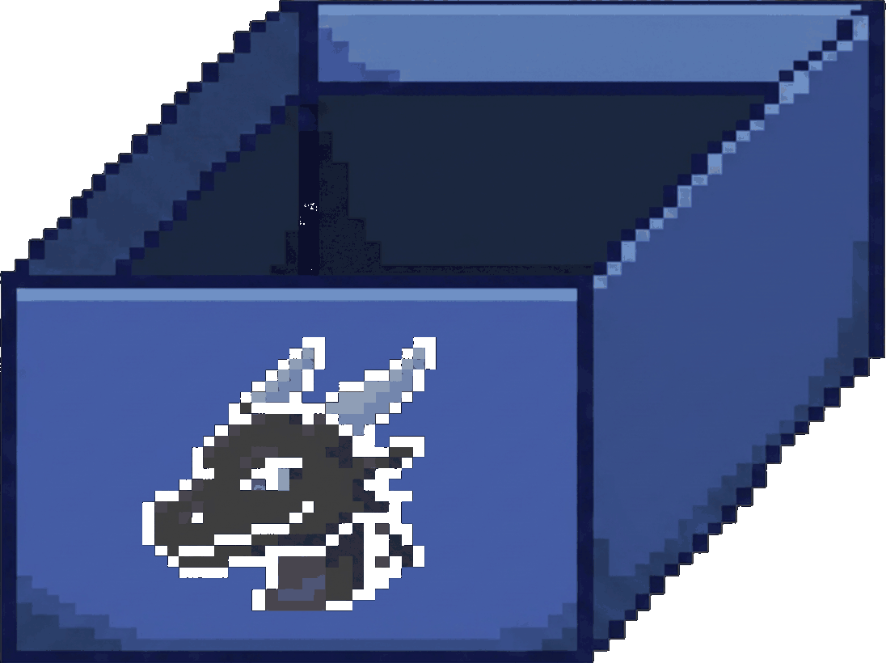
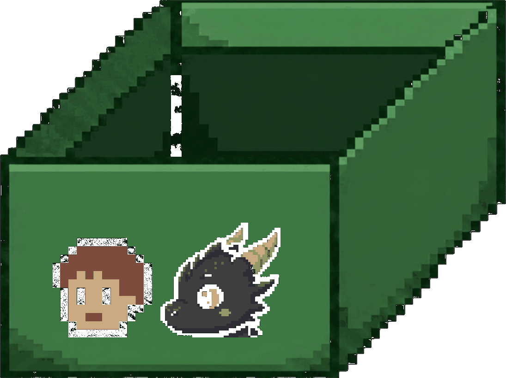
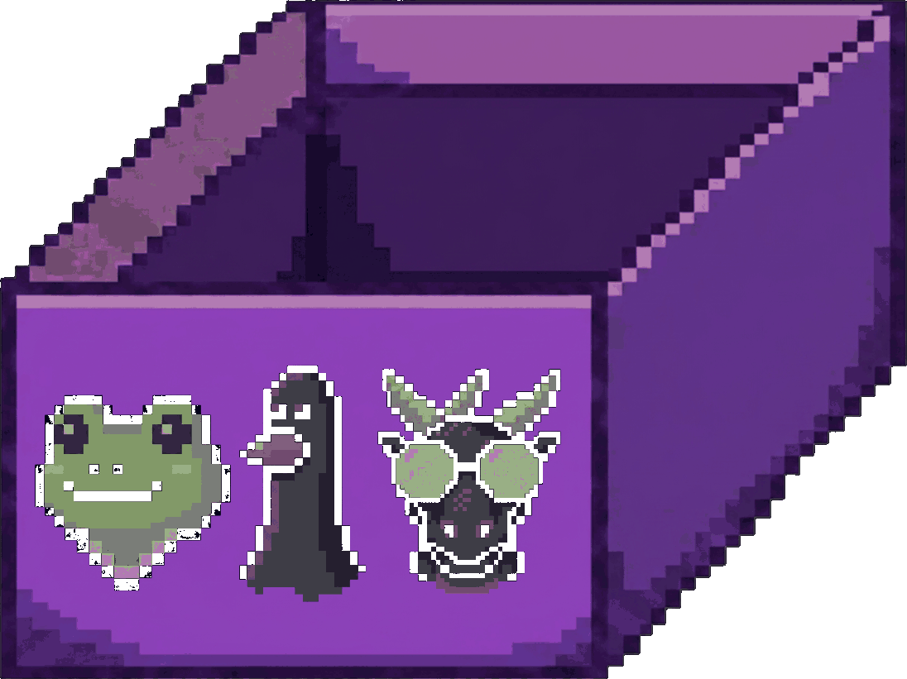
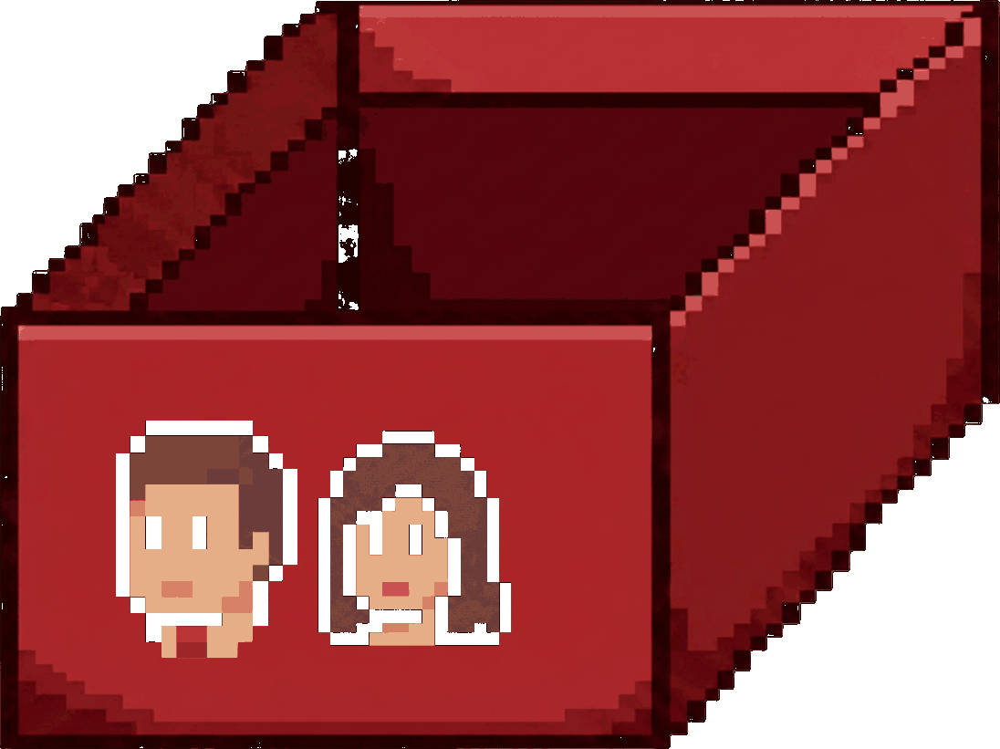

바닥에 캐릭터가 잔뜩 쌓여 있습니다. 마우스로 끌어 알맞은 상자에 넣으세요.
상자 앞면에 그 상자 소속 캐릭터가 그려져 있습니다.
점수 순서 — 보라 > 초록 > 파랑 > 빨강
제한시간 60초 · 목숨 3
오분류하면 목숨 −1 · 시간 내 전부 치우면 보너스
실전은 60초 동안 캐릭터 50명이 쏟아진다.목숨은 3개, 전부 치우면 보너스!
일당은 점수로 정해진다 · 연속으로 맞히면 콤보 보너스